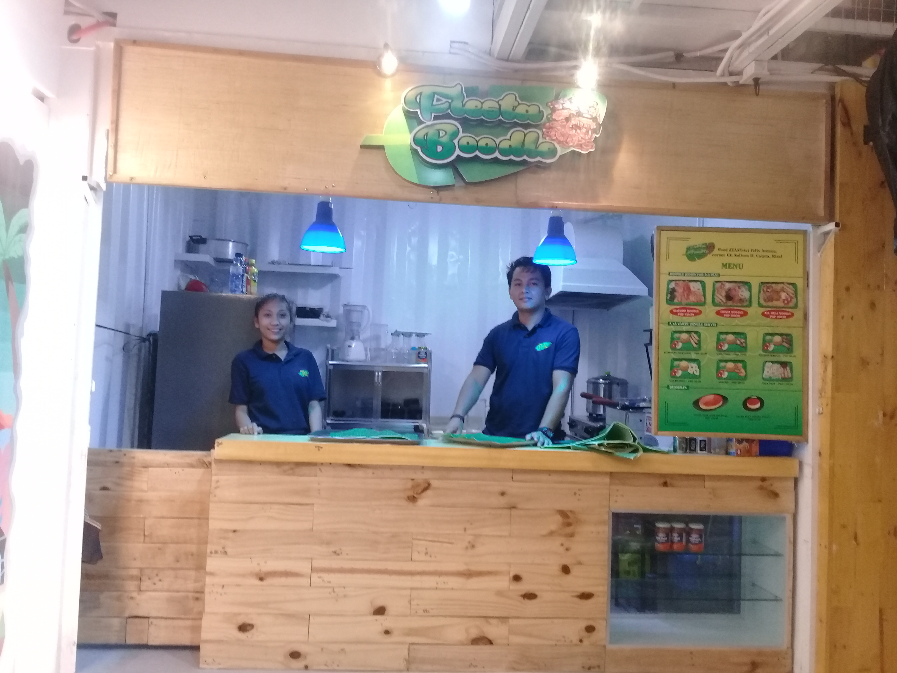
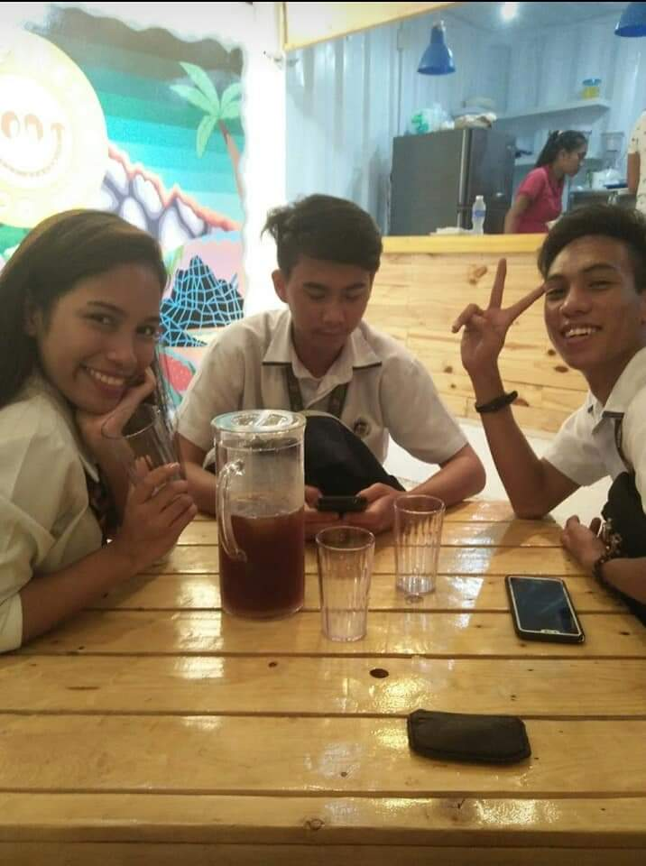
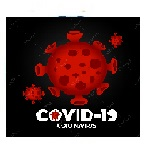
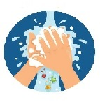
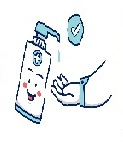
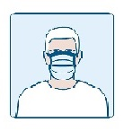
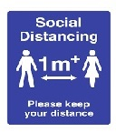
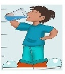

ABOUT
Fiesta Boodle is brought about by the proponent’s desire to meet
the specific needs and demands of customers for healthy,
clean/sanitary, satisfying but affordable/reasonable meals.
His passion for cooking is confirmed by two millennial nephews
and friends who believe that he does can cook delicious Pinoy
Comfort Food served on the usual Filipino table. The idea of putting up
a cafeteria type quick service restaurant has been around for quite some time. Fi
nding an appropriate location is the key. When he finally
thought that an appropriate location near the school may be feasible,
he thought of realizing his dream of starting his own small food business
and eventually create a food brand on his own as he explores what food
products are saleable in his target market – lower B to upper B market eventually.
This particular venture however targets the students whose budget
and purchasing power may be limited.

While there are a lot of fast food and “dirty-unsanitary carenderia”
near the school including the nearby market, we believe that we still
have a niche to get a certain percentage of the market share who may be price insensitive.
Target market are primarily students of ICCT Colleges and other
customers going on their daily or weekly marketing at a nearby town market.
This serves as the target market or geographical area from which we will draw our customers.
Key Strategies generally include Market Penetration
(seeking increased market share for present products or services in
present markets through greater marketing efforts), Product Development
(seeking increased sales by improving present products or services or developing new ones),
Related Diversification (adding new but related products or services) and Product Differentiation.
While there may be competition with other food service restaurants
that are competing directly with a specific menu of the proposed restaurant,
we will employ Product Differentiation and Best-Value Focus Strategy
by serving healthy, quality, clean/sanitary and delicious “Pinoy Comfort Food”
at reasonable (“affordable”) price or at the best price-value available on the market.
We will be serving lunch, merienda and dinner. We will serve breakfast if the market warrants.
near the school including the nearby market, we believe that we still
have a niche to get a certain percentage of the market share who may be price insensitive.

Target market are primarily students of ICCT Colleges and other
customers going on their daily or weekly marketing at a nearby town market.
This serves as the target market or geographical area from which we will draw our customers.
Key Strategies generally include Market Penetration
(seeking increased market share for present products or services in
present markets through greater marketing efforts), Product Development
(seeking increased sales by improving present products or services or developing new ones),
Related Diversification (adding new but related products or services) and Product Differentiation.
While there may be competition with other food service restaurants
that are competing directly with a specific menu of the proposed restaurant,
we will employ Product Differentiation and Best-Value Focus Strategy
by serving healthy, quality, clean/sanitary and delicious “Pinoy Comfort Food”
at reasonable (“affordable”) price or at the best price-value available on the market.
We will be serving lunch, merienda and dinner. We will serve breakfast if the market warrants.
near the school including the nearby market, we believe that we still
have a niche to get a certain percentage of the market share who may be price insensitive.
Target market are primarily students of ICCT Colleges and other
customers going on their daily or weekly marketing at a nearby town market.
This serves as the target market or geographical area from which we will draw our customers.
Key Strategies generally include Market Penetration
(seeking increased market share for present products or services in
present markets through greater marketing efforts), Product Development
(seeking increased sales by improving present products or services or developing new ones),
Related Diversification (adding new but related products or services) and Product Differentiation.
While there may be competition with other food service restaurants
that are competing directly with a specific menu of the proposed restaurant,
we will employ Product Differentiation and Best-Value Focus Strategy
by serving healthy, quality, clean/sanitary and delicious “Pinoy Comfort Food”
at reasonable (“affordable”) price or at the best price-value available on the market.
CONTACT US
COVID-19 SAFETY MATTERS
Trust in God have faith everything will be alright.
We can get more peace if we are able to accept and
believe the assurances of God that everything will be alright.
Be strong during the difficult times, remember the good times,
have faith in almighty everything will be alright in the end.
|  |  |  |  |  |  | |
|---|---|---|---|---|---|---|
RATING A STARS
4.30 average based on 508 reviews.
| 5 star | 300 | ||
| 4 star | 126 | ||
| 3 star | 30 | ||
| 2 star | 40 | ||
| 1 star | 12 |


{kind=link}
{kind=link}
{kind=link}